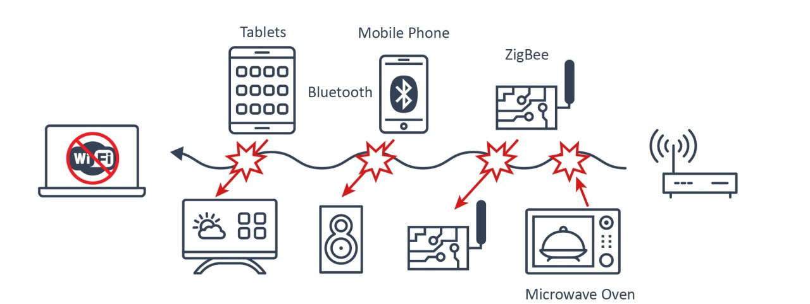
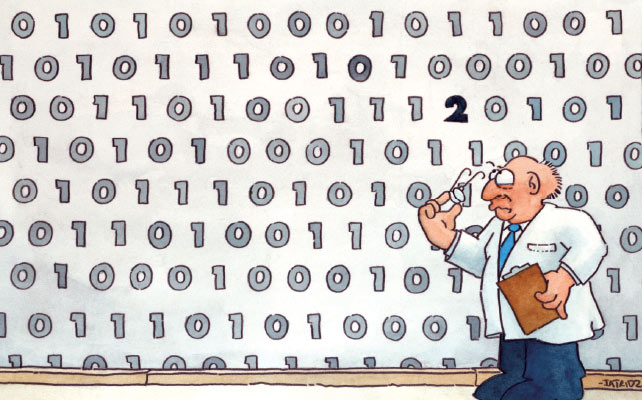
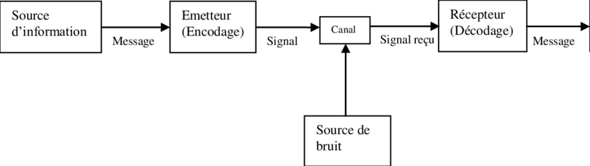
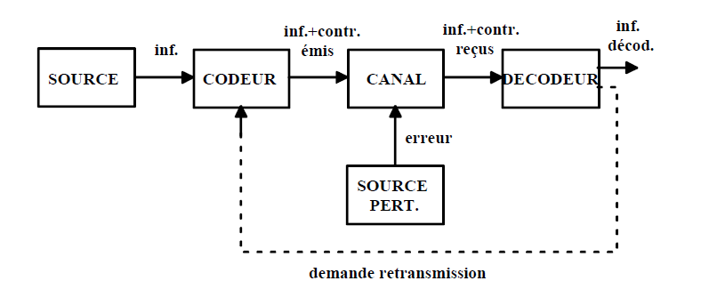
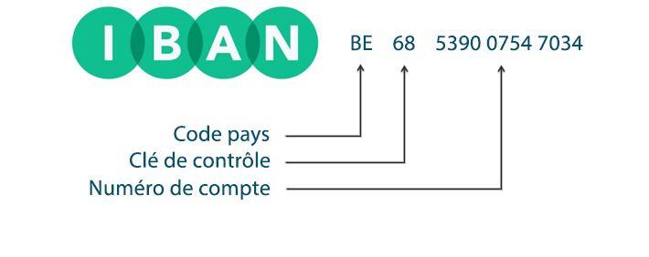
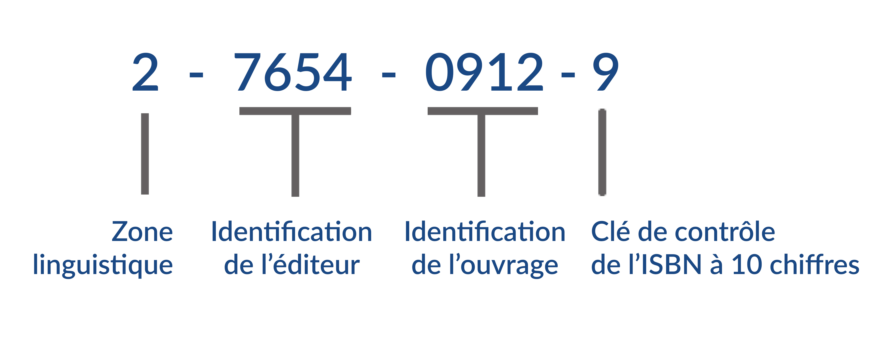
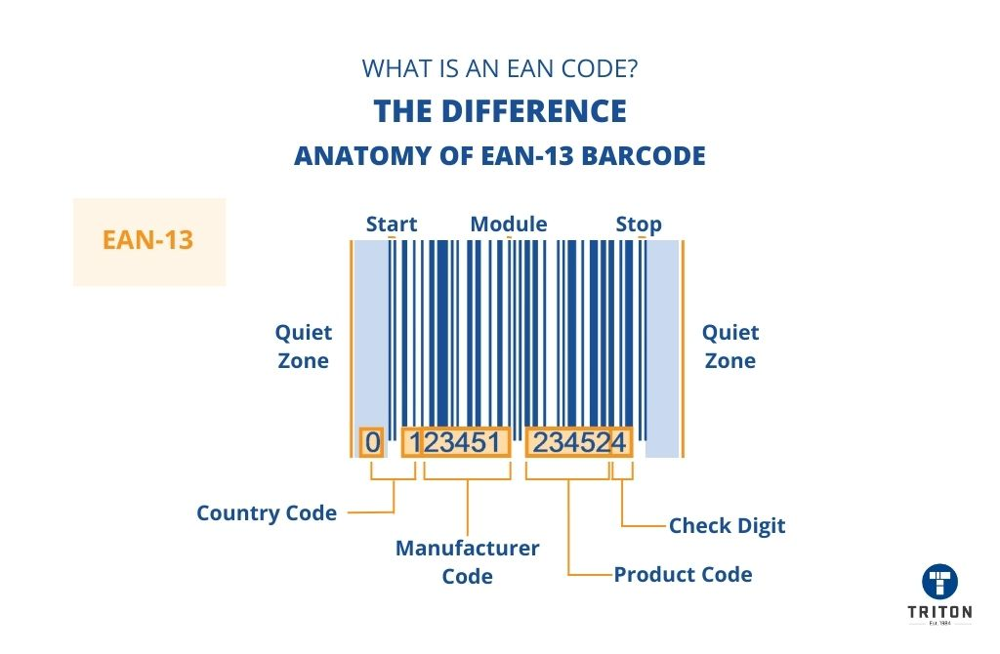
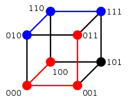

class: center, middle # Le traitement de l'information ## Codes détecteurs et correcteurs d'erreur <img height="350px" src="img/data_processing.png"> --- ## Situation Imaginez que vous êtes dans une salle de classe moderne, où chaque élève dispose d'une tablette ou d'un ordinateur portable. Le professeur a décidé de faire une activité interactive en ligne, où chaque élève doit se connecter à un site web pour répondre à des questions en temps réel. Les élèves sont excités à l'idée de commencer. --- ## Situation Mais soudain, un problème survient : alors que les élèves commencent à se connecter, plusieurs d'entre eux rencontrent des problèmes. Certains voient des messages d'erreur, d'autres ne peuvent pas charger le site, et quelques-uns constatent que leurs réponses ne sont pas enregistrées correctement. La frustration monte dans la classe. --- ## Situation À votre avis, pourquoi une telle situation ? -- * **Plusieurs émetteurs wifi sont installés dans l'école** : les signaux se chevauchent, créant des interférences. -- * **Trop d'appareils sont connectés sur le même réseau** : le réseau est surchargé -- * **D'autres appareils et gadgets sont présents** : les appareils tels que les téléphones sans fil, les fours à micro-ondes ou d'autres appareils sans fil peuvent créer des interférences avec les signaux Wi-Fi. Cela est dû au fait que ces appareils sans fil fonctionnent sur la même bande de fréquences que le réseau Wi-Fi. -- * **Obstacles physiques** : les murs épais de la salle de classe bloquent le signal, rendant la connexion instable. -- <p></p> --- ## Qu'est-ce qu'un code correcteur ? * Un code correcteur est une technique de codage **basée sur la redondance**. * Elle est destinée à **corriger les erreurs de transmission d’un message** sur une voie de communication peu fiable. * La théorie des codes d’erreurs ne se limite pas qu’aux communications classiques (radio, câbles, fibre, …) mais également aux supports de stockage comme les disques compacts, la mémoire RAM et d’autres application où l’intégrité des données est importante. <div style="text-align: center;"> <p></p> </div> --- ## Pourquoi ces techniques de détection d’erreurs et de correction codage existent-elles? <span style="color: red;font-size: 200%;">Ls canaux de trasmissian sont impazfaits !</span> Par exemple : la probabilité d’erreur sur un ligne de téléphone est de 10<sup>-7</sup> , cela peut même atteindre 10<sup>-4</sup>. Avec un taux d’erreur à 10<sup>-6</sup> et un connexion à 1Mo/s => 8bits seront erronés par seconde. --- ## Schéma général de communication <div style="text-align: center;margin-top: 50px;"> <p></p> </div> * Le message à transmettre est d’abord codé en un message. Le codage introduit un supplément d’information (redondances). * Le message est envoyé sur le canal de transmission. * À cause de l’imperfection du canal, le message reçu n’est pas forcément identique au message envoyé : il peut contenir des erreurs. * Le message reçu est ensuite décodé : des erreurs éventuelles peuvent être détectées et corrigées. * Le message décodé est identique au message d’origine si il n’y a pas eu trop d’erreurs dans la transmission. --- ## Schéma général de communication Le même schéma, vu du côté du codage : <div style="text-align: center;"> <p></p> </div> * Le codeur ajoute au message une **information de contrôle** : c'est la redondance. * La **source perturbatrice** agit sur le canal et introduit les erreurs. * Si le décodeur détecte une erreur qu'il ne peut pas corriger, il ne lui reste qu'une solution : **demander la retransmission** du message. --- ## Principe général * Chaque suite de bits à transmettre est augmentée par une autre suite de bits dite « de redondance » ou « de contrôle ». * Pour chaque suite de k bits transmise, on ajoute r bits. * On dit alors que l’on utilise un code C(n,k) pour n = k+r * A la réception, les bits ajoutés permettent d’effectuer des contrôles. --- ## Exemples de la vie courante Le premier système de code détecteur d'erreur est la **checksum** (somme de contrôle). Cette technique compose souvent la base de systèmes de détection d'erreurs plus complexes, que nous verrons plus loin. Il en existe bien d'autres, dans des systèmes plus larges que le seul binaire. En voici trois que vous croisez tous les jours : * le **numéro de compte IBAN** * le **code CPP** (communication structurée d'un virement) * le **code ISBN** d'un livre --- ## Exemples de la vie courante ### Le numéro de compte bancaire belge <p></p> En Belgique, l'IBAN est formé de 16 caractères : il se compose d'abord des lettres "BE" suivies de 2 chiffres, puis des 12 chiffres du numéro de compte national. Par exemple, le numéro de compte belge<br>`539-0075470-34` devient `BE68 5390 0754 7034`. | **BE** | **2 chiffres** | **12 chiffres** | |:------------:|:---------------:|:-----------------:| | Code du pays | Clé de contrôle | Numéro de compte | --- ## Exemples de la vie courante ### Le numéro de compte bancaire belge Algorithme de vérification de l'IBAN : démonstration au tableau. Pour mémoire : 1. Déplacer les **4 premiers caractères** à la fin du compte. 2. Remplacer les lettres par des chiffres au moyen d'une table de conversion (A = 10, B = 11, C = 12, etc.). 3. Appliquer le **modulo 97** à ce nombre. 4. Si le résultat donne **1**, le numéro est correct. <span style="color: red;">→ Testez avec votre propre numéro de compte !</span> --- ## Exemples de la vie courante ### Le numéro de compte bancaire belge **Énoncé** : Alice souhaite rembourser Thomas via virement bancaire. Celui-ci lui a indiqué différents numéros de compte sur un bout de papier. Lequel est correct ? <div style="font-size: 150%; margin-top: 50px;"> * `BE41 0630 1234 5610` * `BE71 0961 2335 6769` * `BE68 5390 0754 7034` </div> --- ## Exemples de la vie courante ### Le code ISBN-10 <p></p> L'ISBN (International Standard Book Number) est un numéro international qui permet d'identifier, de manière unique, chaque livre publié. Il est destiné à simplifier la gestion informatique des livres dans les bibliothèques, librairies, etc. --- ## Exemples de la vie courante ### Le code ISBN-10 Algorithme de vérification de l'ISBN-10 : démonstration au tableau. --- ## Exemples de la vie courante ### Le code EAN-13 Le code EAN-13 (European Article Numbering) est un code-barres à 13 chiffres qui identifie un produit unique (ou emballage) selon un système européen. <p></p> --- ## Exemples de la vie courante ### Le code EAN-13 Algorithme de vérification de l'EAN-13 : démonstration au tableau. --- ## La distance de Hamming * Utilisée en informatique, en traitement du signal et dans les télécommunications. * Elle joue un rôle important dans la théorie des codes correcteurs. La distance de Hamming permet de **quantifier la différence entre deux séquences de symboles**. À deux suites de symboles de même longueur, elle associe le nombre de positions où les deux suites diffèrent. C'est une distance au sens mathématique du terme. Exemples : * La distance de Hamming entre 1011101 et 1001001 est 2. * La distance de Hamming entre 2143896 et 2233796 est 3. * La distance de Hamming entre "ramer" et "cases" est 3. --- ## La distance de Hamming Sur des mots de 3 bits, elle se lit directement sur un cube : chaque arête relie deux mots dont la distance vaut 1. <div style="text-align: center; margin-top: 30px;"> <p></p> </div> Aller de `000` à `111` demande donc de parcourir 3 arêtes : leur distance de Hamming vaut 3. --- ## Exercice de synthèse Nous sommes en pleine ère numérique. Qu'est-ce que cela veut dire ? Tout simplement qu'une partie énorme des informations échangées à travers la planète est matériellement représentée sous la forme de nombres. Messages électroniques, téléphonie mobile, transactions bancaires, téléguidage de satellites, télétransmission d'images, disques CD ou DVD : dans tous ces exemples, l'information est traduite en suites de chiffres binaires. Par exemple, dans le code ASCII, le A majuscule est codé par l'octet `01000001`, le B majuscule par `01000010`, etc. Un problème majeur de la transmission de l'information est celui des erreurs. Il suffit d'une petite rayure sur un disque, d'une perturbation de l'appareillage ou d'un quelconque phénomène parasite pour que le message transmis comporte des erreurs, c'est-à-dire des « 0 » malencontreusement changés en « 1 », ou inversement. <span style="color: red;">Or l'un des nombreux atouts du numérique est la possibilité de détecter, et même de corriger, de telles erreurs.</span> --- ## Exercice de synthèse 1. Proposez une solution de base pour **détecter** une erreur. 2. En critiquant les forces et les faiblesses de cette méthode, proposez une solution qui permette de détecter mais également de **corriger** l'erreur émise. 3. Illustrez votre explication en codant la lettre « j », qui se traduit par 106 dans la table ASCII. 4. Dans quel cas le message demanderait-il une **retransmission** ? --- ## Sources des images * https://www.fastcabling.com * https://qnextech.com/wp-content/uploads/2023/09/IQTouch-C-%E5%9B%BE2-2-1024x889.jpg * https://www.researchgate.net/figure/Un-schema-general-du-systeme-de-la-communication-selon-Shannon-1948-p380_fig1_278636682 * https://www.adminfin.be/wp-content/uploads/2015/11/iban_image_blog_BE_FR.jpg * https://tritonstore.com.au/wp-content/uploads/Anatomy-of-EAN-13-Barcode.jpg